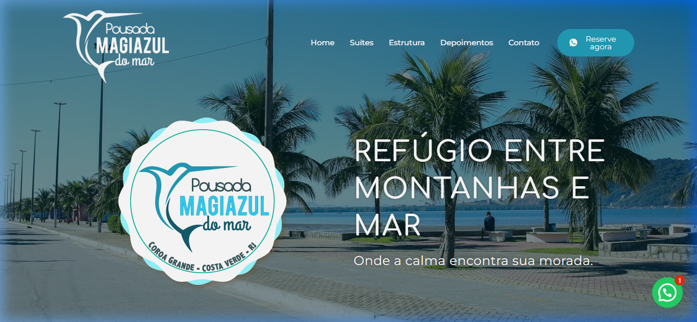
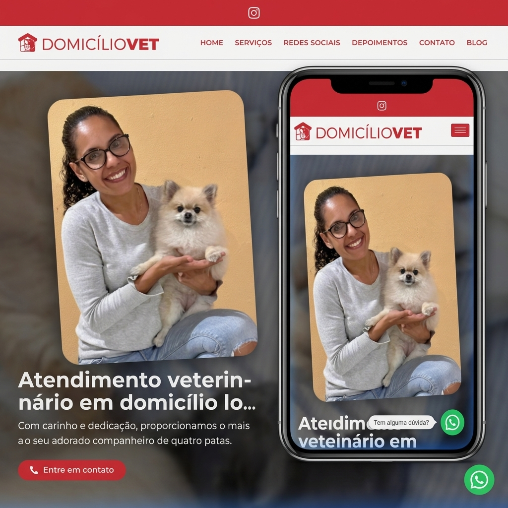
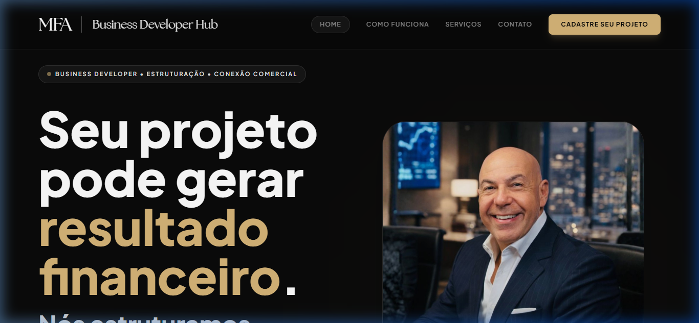
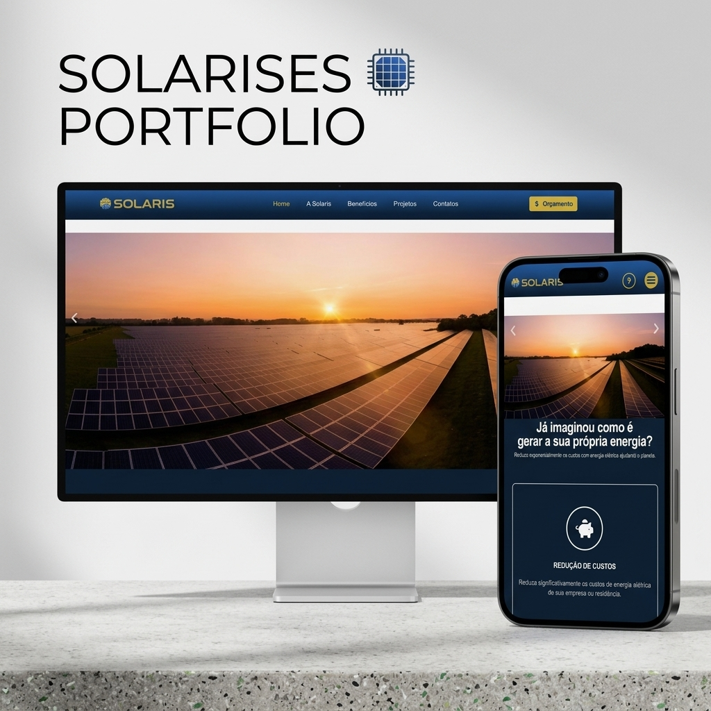
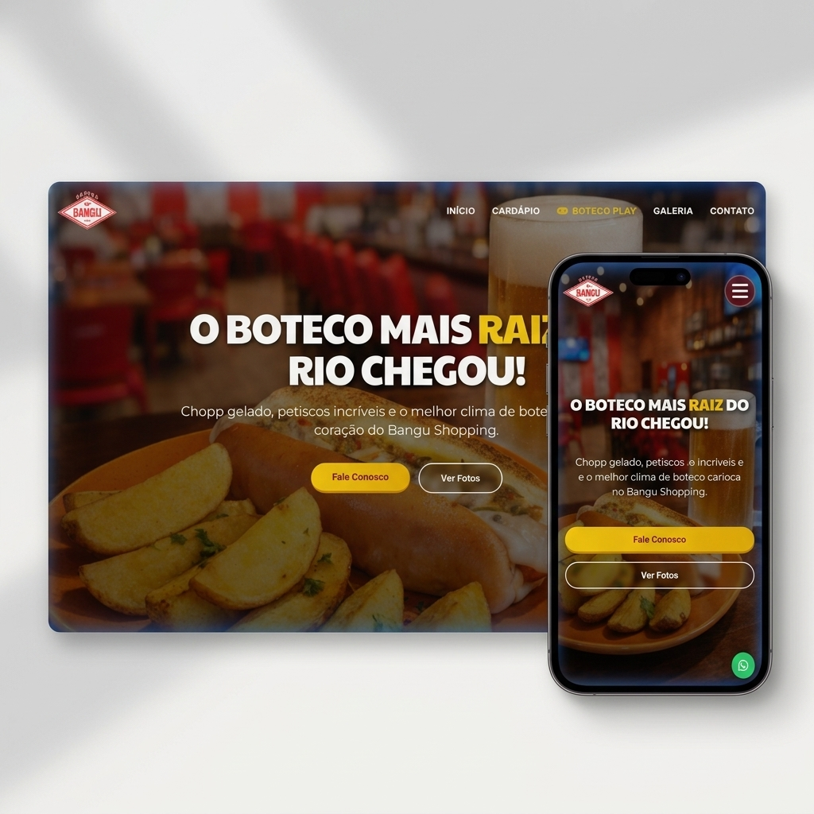
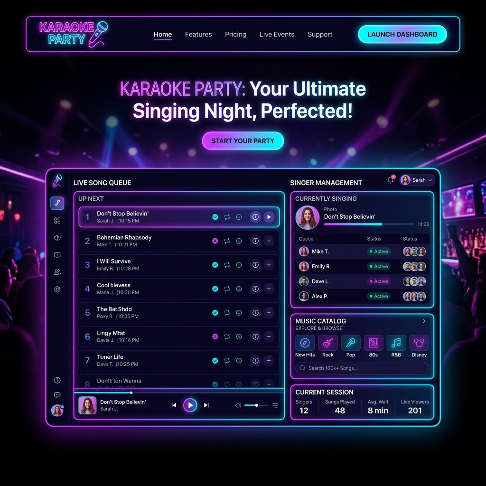

Primeiro, a conversa.
Entendemos seu objetivo e combinamos conteúdo, funcionalidades, prazo e o que entra no projeto.
SITES · SISTEMAS · DESIGN
Criamos experiências digitais para apresentar seu negócio, conectar pessoas e simplificar o dia a dia.
IDEIAS QUE JÁ SAÍRAM DO PAPEL
Cada negócio tem seu jeito.
Cada projeto, uma solução.

HOSPITALIDADE · SITE INSTITUCIONAL
Uma presença digital para conhecer a pousada e planejar a próxima estadia.

SAÚDE ANIMAL · SITE INSTITUCIONAL
Serviços veterinários apresentados com clareza e contato sempre por perto.

NEGÓCIOS · SITE INSTITUCIONAL
Uma vitrine digital para apresentar serviços e conectar oportunidades.

ENERGIA SOLAR · SITE INSTITUCIONAL
Informação e canais de orçamento para aproximar a energia solar de novos clientes.

GASTRONOMIA · SITE INSTITUCIONAL
O clima do boteco também no digital, com informações e contato em um só lugar.

ENTRETENIMENTO · SISTEMA WEB
Fila de cantores e organização da noite conectadas em vários dispositivos.
Juntar pessoas.
Compartilhar momentos.
ORGANIZAÇÃO · PRODUTO PRÓPRIO
Planejamento de viagens e eventos em grupo, com participantes e finanças organizados.
Mais clareza.
Planos em conjunto.
FINANÇAS · PRODUTO EM DESENVOLVIMENTO
Receitas, despesas e planejamento financeiro compartilhados. Fale com a gente para conhecer.
O QUE PODEMOS CRIAR
Uma página para apresentar. Um sistema para organizar. Uma identidade para se destacar. Vamos encontrar o formato certo para a sua ideia.
Vamos encontrar seu caminhoPáginas com a cara da sua empresa, conteúdo bem organizado e caminhos claros para o contato. Do site institucional à apresentação de um serviço ou campanha.
Ferramentas web para organizar processos, centralizar informações e simplificar tarefas. Definimos juntos as funcionalidades que fazem sentido para a sua operação.
Identidade visual e peças de comunicação para apresentar sua marca de forma consistente, da tela ao material impresso, em conexão com a West Print e Web.
Já tem um site? Podemos rever o visual, reorganizar o conteúdo e melhorar a navegação. Envie o endereço e conte o que precisa mudar para avaliarmos o escopo.
Quero renovar meu sitePRAZER, SOMOS A UNODEV
A Unodev é o braço digital da West Print e Web. Criamos sites, sistemas e experiências visuais com atenção ao que o negócio precisa comunicar e resolver.
Também desenvolvemos nossos próprios produtos. Essa experiência faz parte do nosso jeito de trabalhar: testar, ouvir, ajustar e cuidar dos detalhes que aparecem no uso real.
Entendemos seu objetivo e combinamos conteúdo, funcionalidades, prazo e o que entra no projeto.
Desenhamos e desenvolvemos a experiência, com espaço para você acompanhar e revisar.
Conferimos a navegação, os links e a adaptação às telas antes da entrega combinada.
VAMOS TIRAR DO PAPEL?
Conte o que você tem em mente.
A gente começa pela conversa.